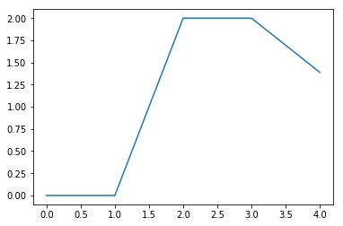

Efficient nonlinear programming at your fingertips, in your favourite language.

<div class="row">
  <div class="col-md-5">
    <div class="multisnip">
{{< highlight cpp >}}
#include <casadi/casadi.hpp>

auto opti = casadi::Opti();

auto u = opti.variable(5,1);

opti.minimize(dot(u,u));
opti.subject_to(u<=2);

decltype(u) x = 1;
for (int i=0;i<5;++i) {
  x = x+cos(x)+u(i);
}
opti.subject_to(x==6);

opti.solver("ipopt");
auto sol = opti.solve();

std::cout << sol.value(u) << std::endl;
{{< /highlight >}}
{{< highlight octave >}}
opti = casadi.Opti();

u = opti.variable(5,1);

opti.minimize(u'*u);
opti.subject_to(u<=2);

x = 1;
for i=1:5
  x = x+cos(x)+u(i);
end
opti.subject_to(x==6);

opti.solver('ipopt');
sol = opti.solve();

plot(sol.value(u))
{{< /highlight >}}
{{< highlight python >}}
from casadi import *

opti = Opti()

u = opti.variable(5,1)

opti.minimize(dot(u,u))
opti.subject_to(u<=2)

x = 1
for i in range(5):
  x = x+cos(x)+u[i]

opti.subject_to(x==6)

opti.solver('ipopt')
sol = opti.solve()

plot(sol.value(u))
{{< /highlight >}}
</div></div>

  <div class="col-md-7 text-left">
    <ol>
       <li>Create symbols</li>
       <li>Compose expressions</li>
       <li>Specify objective and constraints</li>
       <li>Solve!</li>
    </ol>
    
  </div>
</div>
